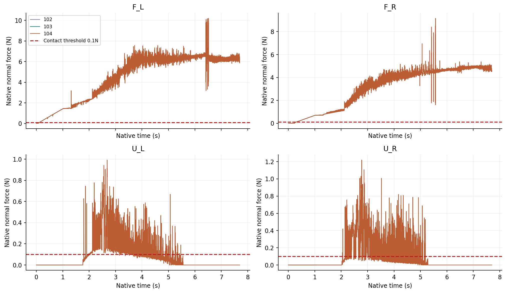
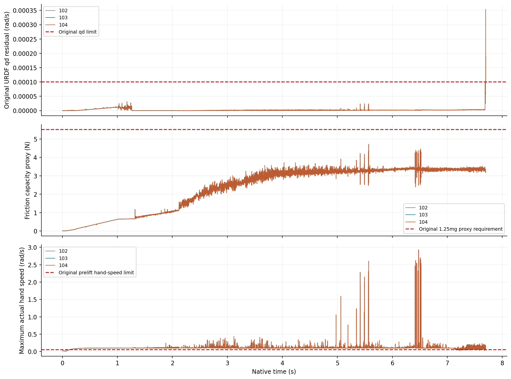

01摘要与当前判定
延长同一开发初态的真实反馈夹持，检验此前短窗口结论能否保持。103完成2048步，原模型、物理、50电机与反馈审计通过，前1024步全部164字段复现102。104的实际完成长度、完整失败判定和四手持续接触列于下表。
本轮仍只有1个独立初态；正式留出0、新随机输入0，学习System 0关闭。诊断通过不能代替完整任务或安全泛化验收。
02研究问题
- 延长持续加载后，原24条URDF位置和速度约束及物理门槛是否仍成立？
- 另外两只手的短暂接触能否形成四手同时各>0.1N连续0.25s？
- 力增加是否同时满足承载余量、低速、关节余量和稳定窗口？
- HOLD/RELAX守卫的实际提交目标与物理响应是否一致？守卫标签本身不证明安全停止。
03系统与预先登记协议
2 FR3/F2 + 2 UR5/DFX开发配置，26臂关节、48手关节、50独立电机；原生960Hz、控制60Hz、臂目标FIFO6=0.1s。梁0.04×0.70×0.08m、0.45kg；物理质量、惯量、摩擦与硬限位不变。使用原生对象真值，未验证视觉闭环。
102/103/104使用逐字节相同的反馈工作程序、16次追加求解和0.10rad/s逐物理步目标过滤。最大观测步数分别1024、2048、8192。104仅扩大记录容量2048→8192，原生ABI、配对、参数复制、返回和q/qd状态处理不变，14项CPU边界检查通过。原模型q与qd各≤10⁻⁴；全74关节超限/超速≤10⁻⁵，9021几何代理≥0，意外接触≤0.1N，手梁接触≤30N/手。没有运行中物体移动或绑定，也没有q/qd投影。
103要求前1024步复现102，104要求前2048步复现103，全部164物理字段包含标量与完整不等长接触数据。所有77物理参数和13初态字段分别核对98。原模型或物理失败保留样本，完整控制周期结束后停止；不能补写为完整通过。
04随机范围与统计分母
这是同一策略的三个观测时长对照，独立开发初态=1；不是3个随机样本或3种独立策略。新随机输入=0，正式独立留出=0。物理步具有时间依赖，不能当作独立安全成功次数，未报告IID成功率置信区间。
既有40000软件提案（32000 IID、4000边界、4000混合）、1225对和64分层，不能证明50维安全体积。历史128输入开发集不能替代冻结合格配置与策略后的两套新正式种子、每方法至少128次完整任务。已有覆盖范围与缺口
05结果与抬升前门槛
| 时长对照 | 实际/计划步 | 最大q / qd残差 | 原诊断门槛 | 四手连续窗口 | 完整任务 |
|---|---|---|---|---|---|
| 102 · 1.0667s | 1024/1024 | 7.45e-08rad / 2.4694e-05rad/s | 通过 | 0.000000s | 未通过 |
| 103 · 2.1333s | 2048/2048 | 7.45e-08rad / 3.10987e-05rad/s | 通过 | 0.000000s | 未通过 |
| 104 · 7.7000s | 7392/8192 | 1.79e-07rad / 0.000353956rad/s | 未通过 | 0.093750s | 未通过 |
四手各自接触与持续观测
| 记录 | 手 | 峰值 / 末步力 N | 超过0.1N的物理步 | 最长连续观测 s |
|---|---|---|---|---|
| 102 | F_L | 1.4607 / 1.4566 | 910 | 0.936458 |
| 102 | F_R | 0.7076 / 0.7033 | 751 | 0.781250 |
| 102 | U_L | 0.0000 / 0.0000 | 0 | 0.000000 |
| 102 | U_R | 0.0000 / 0.0000 | 0 | 0.000000 |
| 103 | F_L | 3.3506 / 2.4388 | 1934 | 2.003125 |
| 103 | F_R | 1.8897 / 1.4038 | 1775 | 1.847917 |
| 103 | U_L | 0.7453 / 0.1313 | 128 | 0.108333 |
| 103 | U_R | 0.4189 / 0.0641 | 2 | 0.000000 |
| 104 | F_L | 10.1940 / 6.2452 | 7278 | 7.569792 |
| 104 | F_R | 9.1637 / 4.6004 | 7119 | 7.414583 |
| 104 | U_L | 0.9925 / 0.0000 | 2062 | 1.118750 |
| 104 | U_R | 1.2195 / 0.0000 | 1625 | 0.093750 |
抬升前必要条件
| 记录 | 承载代理峰值 / 末步 N | 末步手速度 rad/s | 末步余量 rad | 就绪条件最长观测 s |
|---|---|---|---|---|
| 102 | 0.6482 / 0.6480 | 0.100384 | 0.120555 | 0.000000 |
| 103 | 1.5733 / 1.2114 | 0.102266 | 0.122301 | 0.000000 |
| 104 | 4.7209 / 3.2537 | 0.129983 | 0.120624 | 0.000000 |


全部逐步CSV · 各手接触与抬升前摘要 · 四手矢量图 · 模型与承载矢量图


06原生四视图视频
102 · 实际记录 1.0667s
103 · 实际记录 2.1333s
104 · 实际记录 7.7000s
全部原生相机帧、实际时戳与SHA绑定；失败结束帧保留。末帧显示另有约0.067s停留，不增加物理步数。视频外观不能证明抓取成功。原帧与媒体对应清单
07失败与守卫响应
104计划8192步，在第7388步（7.696875s）F_R的right_thumb_3_joint首次超过原速度关系门槛；当时模式为HOLD。整个16步控制周期保留，到7392步停止。完整独立审计最大残差0.00035395566rad/s>10⁻⁴，因此原模型判定失败；物理门槛通过并不能抵消此失败。
| 记录 | 手 | SEEK | HOLD | RELAX | JOINT_GUARD |
|---|---|---|---|---|---|
| 102 | F_L | 60 | 0 | 0 | 0 |
| 102 | F_R | 60 | 0 | 0 | 0 |
| 102 | U_L | 60 | 0 | 0 | 0 |
| 102 | U_R | 60 | 0 | 0 | 0 |
| 103 | F_L | 124 | 0 | 0 | 0 |
| 103 | F_R | 124 | 0 | 0 | 0 |
| 103 | U_L | 124 | 0 | 0 | 0 |
| 103 | U_R | 124 | 0 | 0 | 0 |
| 104 | F_L | 215 | 242 | 1 | 0 |
| 104 | F_R | 330 | 128 | 0 | 0 |
| 104 | U_L | 458 | 0 | 0 | 0 |
| 104 | U_R | 458 | 0 | 0 | 0 |
103四手同时超过0.1N仅有2个孤立样本，最长连续窗口0s。104虽增加至0.09375s，仍低于0.25s；抬升前意图为0，实际抬升为0。
| 手与模式 | 实际目标仍闭合的物理步 / 模式步 | 最高实际闭合目标速率 rad/s | 首次模式时的名义/提交目标差 rad |
|---|---|---|---|
| F_L · HOLD | 3211/3872 | 0.100021 | 0.356383 |
| F_L · RELAX | 16/16 | 0.100021 | 0.049379 |
| F_R · HOLD | 1476/2048 | 0.100021 | 0.153593 |
HOLD冻结名义进度时，实际提交目标仍以约0.10rad/s继续闭合；RELAX也捕获到仍闭合的区间。这是实际命令观测，不单独证明物理越界或原生速度关系失败的原因。另两手末步已接近名义目标、运动趋于稳定，但对梁法向力均为0；仅延长时间无法解释或修复此时的接触缺失。
下一步分别检验：HOLD是否应锚定实际提交目标、RELAX是否应立即撤回；另外两手的操作端点与布局是否留住接触；加载下原生速度关系是否需要不同收敛处理。每个假设独立对照，保留原模型和物理阈值。原始观测、失败关系与可证伪方案
08结论边界
本报告只覆盖已知接触初态的持续反馈诊断。四手完整抬升、搬运、放置、释放和退回尚未通过；正式2 FR3 + 2 JAKA + 4 RH56F2配置尚未合格。9021点为几何代理，连续扫掠与原生烹饪网格仍未认证；真实视觉感知、硬件与学习System 0均未认证。
安装的原生求解器源提交未知，只绑定实际ABI、调用返回、原生状态及独立原URDF审计。所有新结果不增加正式随机分母，不改变原九项验收要求。
09九项完整验收
| 要求 | 原门槛 | 状态 | 未完成项 |
|---|---|---|---|
| holding · 回退保持在原始非零速度和延迟下持续安全 | 所有128输入全部原生几何/接触/限位/速度通过完整480控制周期；正式独立集另验 | DEVELOPMENT_LONG128_PASS_FORMAL_PENDING | 独立冻结多种子与运行时未来安全/制动认证 |
| effective_motion · 保留操作意图并有实际四臂运动 | 冻结门槛：平均路径与各分层比例>=0.9、四臂运动比例>=0.9、全部26关节平均运动范围>=0.001rad；暂停非威胁臂继续和恢复及任务完成联合验收 | FAIL | 漏检碰撞和FIFO到达/未来保持；选择性暂停、恢复及任务完成 |
| random_support · 强随机、大范围操作空间与定向危害覆盖 | 记录采样分布、全26DOF和速度支持、覆盖图、所有拒绝及分层；不得将筛选集当无条件全空间 | PARTIAL_DEVELOPMENT_FULL50_IID_INPUTS_NATIVE_AND_FAULT_STRATA_PENDING | 实际原生手指/全50电机联合随机轨迹、几何拒绝率、对象布局和故障分层；至少两批独立正式960周期 |
| frozen_generalization · 科学规范的冻结协议、独立多种子、留出与不确定性报告 | 机制/判据冻结后使用至少两套独立新种子；全部登记窗口与失败保留；无结果后调参；报告最坏种子和适用统计上界 | NOT_ACCEPTED | 候选修复后冻结至少两套独立新种子；保留所有失败，报告最坏种子 |
| objects · 物体位置、姿态、大小、速度、可达性进入明确规划与安全输入 | 逐帧实际对象状态绑定、坐标/尺度校验、可达与拥挤判定、过时/缺失状态安全处理；视觉接口另独立校验 | PARTIAL_SOFTWARE_OBJECT_INPUT_CONTRACT_NATIVE_AND_ACTOR_INTEGRATION_PENDING | 完整受载模型、真实感知与陈旧状态故障、活动烘焙形状认证、标准资产推广 |
| grasp · 真实物理夹持、抬升、搬运、放置和释放 | 正式100mm抬升、>=2s稳定持物准入；摩擦接触驱动，无reset后物体写位姿、parenting或固定关节替代摩擦夹持；指定手接触和阶段成功联合判定 | FAIL_LOADED_ORIGINAL_MODEL_FULLTASK_CANONICAL_AND_FORMAL_PENDING | 原q与qd<=0.0001受载模型、全部原生接触观测、持续四手真实夹持与抬升/搬运/放置/释放/脱离退回全部联合通过 |
| cooperative_task · 真实四臂共同任务且有安全与不安全的同输入对照 | 同一raw/S0外生命令初态对象资产；cross/self/table各危害；选择性暂停、另一臂移开、恢复、任务成功和零违规全部通过 | FAIL_LOADED_ORIGINAL_MODEL_FULLTASK_CANONICAL_AND_FORMAL_PENDING | 完整协作成功及同输入System0开关配对 |
| native_oracle · 完整原生观测和独立危害判据，无漏测或单看画面 | 9021球对与82碰撞刚体原生接触每个物理子步，全74关节/实际目标/FIFO、对象风险；非有限数据或分母缺失即拒绝 | FAIL_LOADED_ORIGINAL_MODEL_FULLTASK_CANONICAL_AND_FORMAL_PENDING | 活动烘焙形状、延迟到达/负载预测、正式广域随机与视觉输入完整验收 |
| visual_delivery · 网页可审阅的安全对照、完整视角和证据归档 | 俯视/正视/侧视及需要的局部视角正确缩放，原生状态与视频绑定，暂停/恢复/任务侧车；主站链接、实际部署和公共字节回读通过 | FAIL_LOADED_ORIGINAL_MODEL_FULLTASK_CANONICAL_AND_FORMAL_PENDING | 真实成功四臂完整任务、学习System0同输入开关配对与两批正式广域留出联合验收 |
原九项门槛与证据矩阵；九项尚未共同达标。
10数据与复现
- 102完整原始数据
- 103完整原始数据 · 第1包（67.2MiB）
- 103完整原始数据 · 第2包（8.2MiB）
- 103完整原始数据 · 第3包（0.5MiB）
- 103完整原始数据 · 第4包（66.6MiB）
- 103完整原始数据 · 第5包（20.8MiB）
- 104完整原始数据 · 第1包（61.1MiB）
- 104完整原始数据 · 第2包（69.9MiB）
- 104完整原始数据 · 第3包（69.4MiB）
- 104完整原始数据 · 第4包（64.8MiB）
- 104完整原始数据 · 第5包（4.4MiB）
- 104完整原始数据 · 第6包（1.8MiB）
- 104完整原始数据 · 第7包（66.6MiB）
- 104完整原始数据 · 第8包（67.7MiB）
- 104完整原始数据 · 第9包（67.1MiB）
- 104完整原始数据 · 第10包（67.6MiB）
- 104完整原始数据 · 第11包（39.1MiB）
同一运行的全部ZIP分包共同组成完整原始记录，解压到同一目录；原始文件没有切割、筛选或舍弃。逐文件归档与哈希清单 · 实验、审计和CPU边界源码 · 源码哈希 · 当前网页文件清单
先核验原文件、参数和初态，再按原URDF复算24关系、82点接触、9021几何、74关节、50电机和真实反馈命令。前版完整方法对照与失败。报告组织参考具身任务报告、RoboDojo及具身AI资料，外部报告数据不作为本项目结果。